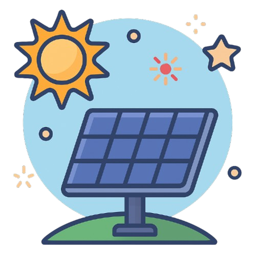
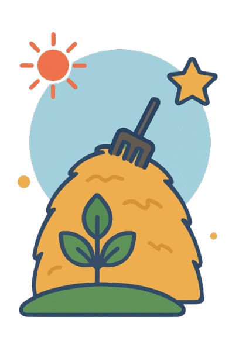
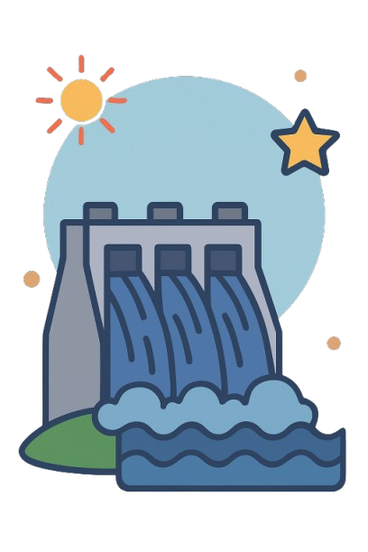

O QUE É?
Energia renovável é a energia gerada a partir de recursos naturais que se regeneram naturalmente e são praticamente inesgotáveis. Isso inclui fontes como o sol, o vento, a água em movimento, o calor da Terra e matéria orgânica. Diferente dos combustíveis fósseis (como o petróleo, o carvão e o gás natural), as fontes renováveis não se esgotam com o uso e têm um impacto muito menor no meio ambiente. Além disso, elas ajudam a reduzir a emissão de gases poluentes que causam o aquecimento global.






Clique nas imagens para saber mais!




